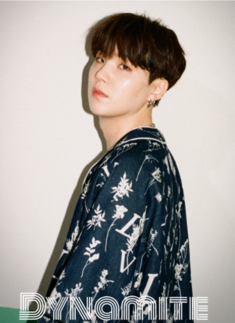
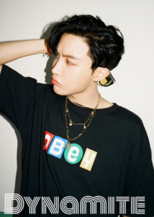
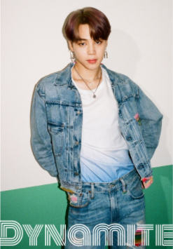
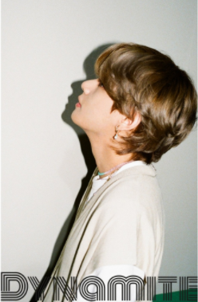

성격 : 멤버들의 증언에 따르면 응답하라 1994의 쓰레기와 판박이라고 한다. 일할 때 빼고는 덜렁대는 성격 때문인 듯. 하지만 그에 비해 성격은 소심한 편이라고 한다.
리더 : 리더라는 포지션 + 중저음의 목소리와 각종 뮤직비디오에서 등장하는 모습 때문에 언뜻 봐선 이쪽이 연장자로 보일 정도다. 본인도 어렸을 때 애늙은이 같다는 소리를 많이 들었다고 한다.
Jin (김석진)
생일 : 1992년 12월 4일
비주얼 : 멤버들도 인정하는 방탄소년단의 공식 비주얼이다. 고급스러운 분위기를 지닌 도시적이고 차분한 정석으로 잘생긴 미남이다.
보컬 : 방탄소년단 타이틀 곡 중 솔로 보컬 부분을 주로 맡고 있다. 파워풀한 군무가 특징인 방탄소년단이 노래 중간에 잠시 비트를 낮추고 보컬에 집중하면 거긴 진이 등장하는 파트라고 보아도 무방.

Suga (민윤기)
생일 : 1993년 3월 9일
프로듀싱 : LOVE YOURSELF 承 'Her' 컴백 기념 엠넷의 특집 방송 BTS COMBACK SHOW에서 본인이 천재인 걸 인정하냐는 말에 자신은 천재가 아니라며 부끄러워했지만, Agust D 믹스테이프로 공개된 슈가의 개인 작업실 이름은 Genius Lab으로 천재 연구소라는 뜻이다.
외모 : 직설적인 랩 가사와 강렬한 랩 스타일과는 상반되게 동글동글하고 귀여운 느낌의 외모이다.

J-hope (정호석)
생일 : 1994년 2월 18일
케미 : 형라인(RM&진&슈가&제이홉): 말 그대로 방탄소년단의 형라인. 이성적이고 냉철할 것 같은 조합이지만 뭉쳤다 하면 의외의 헐랭함과 허당미를 보여준다. 진의 아재개그를 받아주지 않는 조합이기도 하다.
음악스타일 : 전반적으로 10대와 20대 청춘들의 생각과 고민, 삶과 사랑, 꿈과 역경을 주요 주제로 하는 노래들을 통해 자신들만의 세계관을 구축하고 있으며, 연계되는 이야기를 다양한 뮤직비디오들을 통해 유기적으로 풀어 나가는 모습을 보여준다.

Jimin (박지민)
생일 : 1995년 10월 13일
외모 : 방탄소년단 중 제일 말랐으며 정국은 몸이 가장 좋은 멤버 2위로 뽑았다. 작고 마른 체구에서 숨겨진 잔근육과 무용으로 다져진 허벅지를 가지며 핫바디로 불린다. 매우 긴 다리의 소유자로 신체비율이 좋은 점도 매력이라고 볼 수 있다.
여담 : 집에서는 밑으로 남동생 한 명을 둔 장남으로, 얼핏 보면 막내 같다가도 때때로 장남의 모습이 보인다. 형처럼 다정하게 잘 챙겨주는 지민의 모습은 현실 남친 같은 말투의 박지민이라는 영상을 보면 더 잘 알 수 있다. 남동생과도 일반적인 형제들에 비해 다정한 사이. 동생을 '현이'라는 애칭으로 부른다.

V (김태형)
생일 : 1995년 12월 30일
랩 : 보컬이지만 랩, 특히 싸이퍼에 대한 로망이 많은 듯 보인다. 방탄소년단 래퍼라인의 유닛곡 시리즈 "Cypher"에 특히 큰 애정을 보이고 있으며, 팬미팅 중 "Cypher pt.3"를 커버하기도 했다. 이후로 'MC 자두'라는 새로운 별명이 생기기도 했다. 미니 5집 수록곡 고민보다 go에선 그의 랩 실력을 볼 수 있다.
외모 : 동양과 서양 얼굴의 매력을 다 가지고있는 조각미남이기도 하여 신비한 얼굴이라 불리기도 한다.
JungKook (전정국)
생일 : 1997년 9월 1일
외모 : 가수는 컨셉에 따라 분위기가 달라지기 마련이지만 성장에 따라 활동마다 인상이 달라지는 것이 눈에 띄는 멤버이기도 하다. 소년미와 섹시미를 등가교환했다 헤어스타일에 따라 분위기가 극심하게 바뀌기도 한다.
성격 : 긍정적 의미로서의 마이웨이 성격으로, 심한 이야기를 들으면 그냥 무시하는 편이라고 한다. 또한 지민에 의하면 뷔와 더불어 정말 솔직하다고 한다. 하기 싫은 건 딱 잘라서 안 한다는 모양.